Email Us
Please send us an email, we would love to hear from you!

The last update left off a while ago but not too many biking hills back. That update was written just before we entered the Lake Mead area while Annette was grocery shopping. She came back with an interesting offer, she met an older gentleman in the grocery store who offered for us to stay with them in the Valley of Fire Nevada State. We weren't planning on visiting this park but she was told the park was full and they would share their campsite with us. Interesting offer, and there was word of free showers in this campground. The bait was set and we ventured in that direction. This park turned out to be an outcrop of red sandstone. We had intended to camp at a place called Poverty Flats on Google Maps. It was just nationally owned land which is often free to camp on but this particular area was a plateau that you could easily drive off the highway into the desert and find a spot to camp. Therefore there was tons of RVs with people just free camping out in the desert. We pushed on, and as we turned off the main highway through Lake Mead we started uphill. While the climb didn’t look steep, we were tired at the end of a long day. The kilometers crept agonizingly by and while we knew there was a campground we began to joking question its existence.
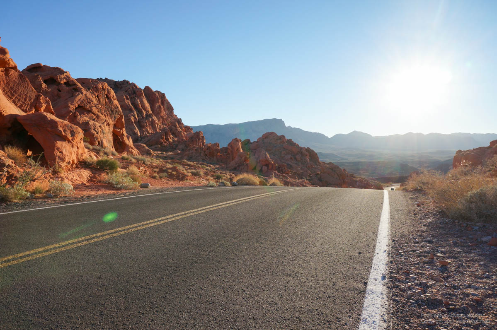
We rolled in just before sunset to the most interesting campground of the trip.
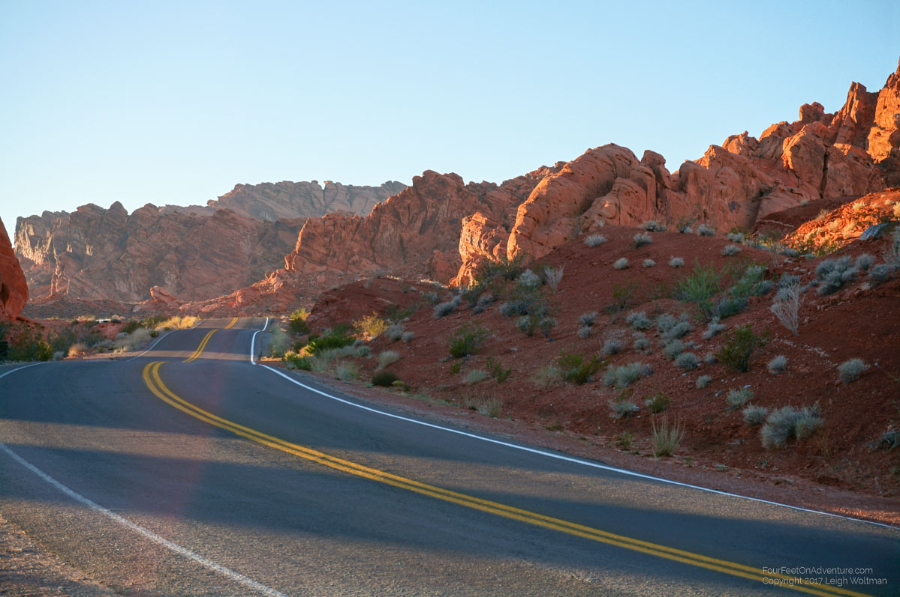
Big red mounds of rock littered the desert and a campground had been positioned around them. The rocks were often 100 metres tall and could be climbed easily.
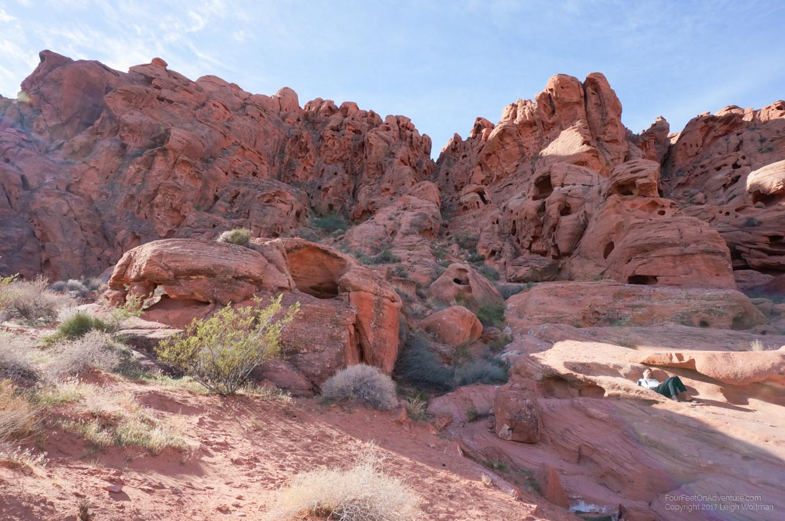
Our hosts turned out to be an interesting couple. They were both 70 now and lived in their RV during much of the winter. They then spent the rest of their time on their sailboat which was currently in Mexico. The sailboat had spent several years crossing the Pacific ocean and harbouring in various atolls along the way. In fact, they pulled their 3 children out of school and started home schooling them between the ages of 8 and 10 in the Pacific and Mexico until the oldest turned 18 and was ready for college. Very bold, and while they aren’t a close family any more, their kids have all gone onto complete degrees and are all doing well. We didn’t get into it but their lack of closeness seems to stem from their disapproval of the children’s choice to not continue a nomadic lifestyle (though maybe more of not being on the same page anymore). They were very friendly, and after learning they were wind and sun chapped sailors I would have never guessed by their appearance that they were over the age of 50, let alone 70. Anyway, I was worn out after the long ride, so we spent a layover day at the campground with our hosts. I really liked our campsite as climbing the rock behind our spot gave a really large flat sheet of rock overhanging the whole campsite, really nice to sit, work and even flat enough do some morning yoga.
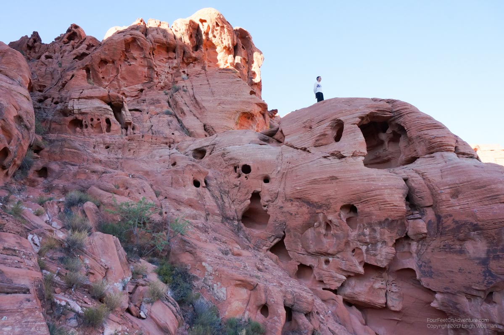
Annette spent that day hiking bringing back stories of more colourful rocks further afield.
Our ride out was a lot easier and we easily coasted above 50 km/h through most of the park. We've noticed this trend with the super heavy bike, any slope uphill and we are forced to the easy gears and our speed drops to 5-6 km/h, and any hint of slope downhill and we rocket forward at speeds you would have to pedal your guts out to achieve on a normal bike. Back towards Lake Mead, Annette had been told by another grocery store encounter that a hot spring lay ahead in the second group of palm trees. The directions weren't that clear so upon seeing the first group of trees we decided to investigate and at least have lunch. What a strange site this was, here we are in dusty hills where the only vegetation is sparse bushes, and all of a sudden a lush group of 10 palm trees is growing. I was tired and sun beaten enough to believe this could be a mirage and I was really losing it. However, a constant spring underground wetting the soil had literally sprouted this botanical garden. We continued on, not finding the promised pool to soak in. The next oasis of palms in the desert proved to be the alluded to pool. Here we found an actual hot spring pool and someone built a little concrete tub to capture the run off into a little soaking pool. Into bathing gear and we jumped into the water which was pleasantly enjoyable to just float in.
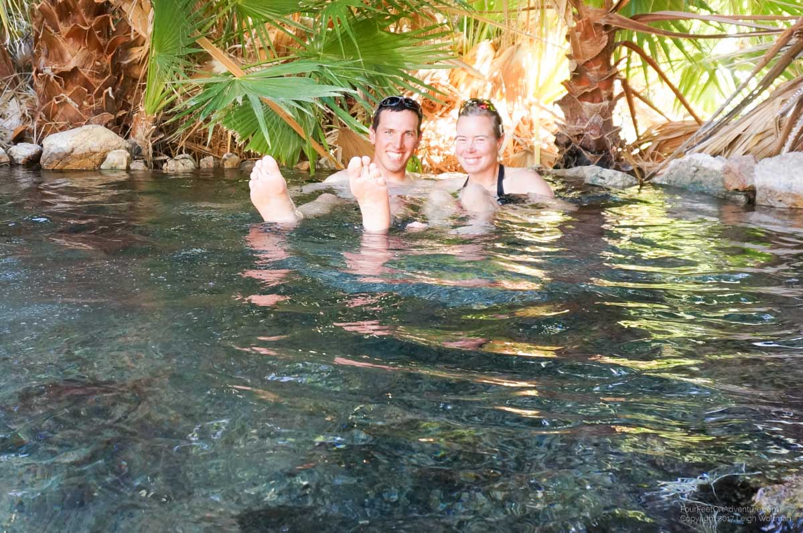
While this area is national park land, it isn't managed as a natural environment since Lake Mead is all artificial anyway (Hoover Dam’s reservoir) so the concrete additions to the natural hot spring and the fact that tropical fish have been introduced to the main hot spring pond doesn't seem to be taken issue of. We had a nice soak, and then continued on. We hoped to put some distance in but elected to take the first campground.
Unfortunately, these campgrounds were 7 kilometers off the highway but as we coasted towards it we knew the climb first thing the next morning would not be enjoyable. We found the campground pretty much empty. The supermoon rose above the mountains in the desert beyond Lake Mead. We almost skipped out on the payment except a volunteer ranger came around the check minutes before we drove off. He did justify his payment as he gave us a tip about a bike path into Las Vegas that we would surely use in a couple days. Our original plan would have missed the bike path and probably been an unenjoyable ride. After our morning penalty climb, we continued along Lake Mead. We eventually decided to push past the next campground and aim for the last before Las Vegas. It was a long day but we had been biking for several days in the desert and the worry of sufficient water had been a good lesson.
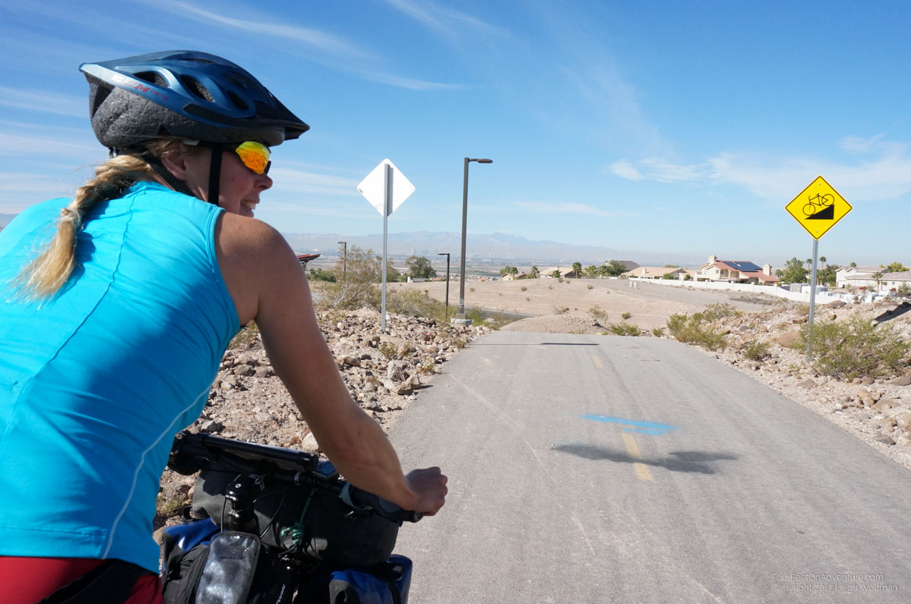
We even passed two cyclists going in the opposite direction (it is unlikely we would pass anyone at our speed in the same direction), they were two guys from Austria on a bike tour. We finally rolled into the campground at the tip of Lake Mead, passing our first sign of the extravagance of Las Vegas with a community that was obviously heavily irrigated with palm trees and golf courses which ended our desert in an obviously unnatural step change in vegetation. We were happy to be within striking distance of Las Vegas but my knee had suffered the consequences. My right knee had become inflamed and while not super painful each stroke of the pedal is a little tender. We sat had an enjoyable evening slowly making a flapjack at a time while we watched the moon rise. A noisy highway with exotic rental cars and streams of helicopter tours and a long continuous line of airborne jets jockeying for position on the runway approach indicated we are not in the wilderness anymore.
The next day we found our bike path and rode towards the giant city in the desert. We stopped outside a Taco Bell to steal WiFi and book a hotel, well motel with hopeful access to drag the bike into our room.
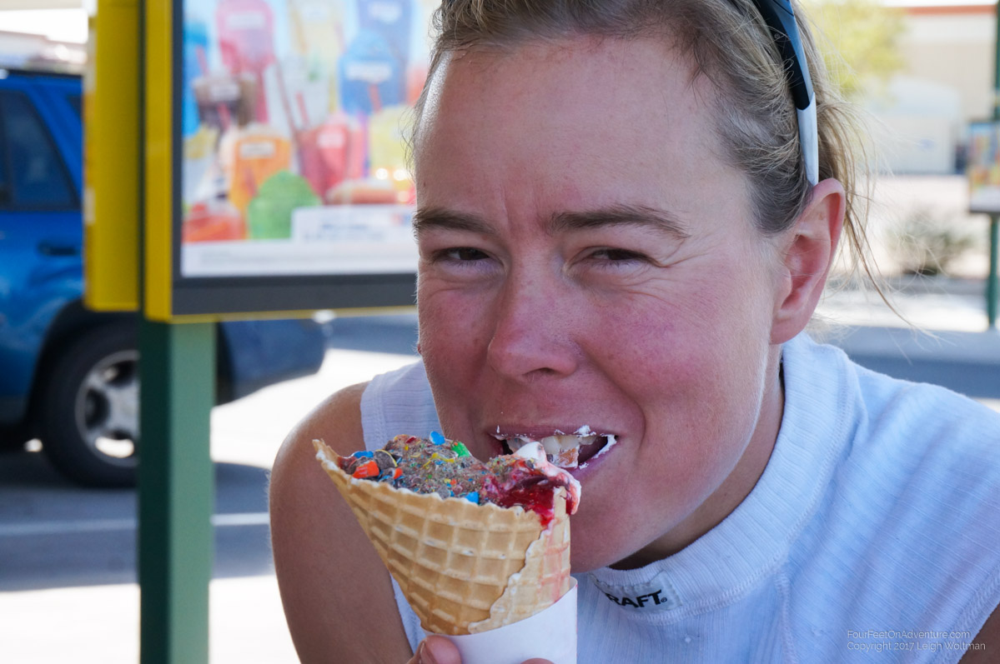
We booked two nights right off the main strip, I guess we will have to see it. Our hotel worked out but it was another long ride into Las Vegas again zapping any recovery out of my knee. But as promised the Las Vegas strip was close at hand. This was quite a weird experience, it really is an adult amusement park. We people watched for a while in a model city of New York, all inside, while eating the most expensive slice of pizza.
The next day, we split up, I rode a city bus looking for various errands to be complete and successfully replacing my previous bike shoes which had the unfortunate tendency of making my feel loose feeling at the end of the day. I tipped Annette off about a bunch of outlet stores with sales and she replaced several articles of clothing.
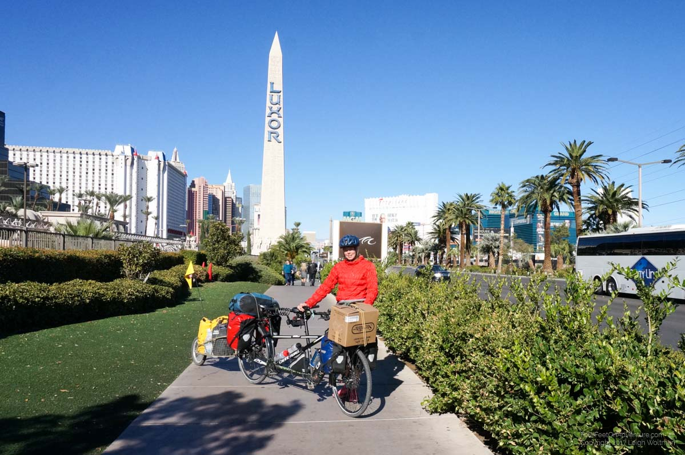
We prolonged our hotel stay one extra day as it was quite nice to be on a nice mattress and have our own bathroom.
The next day we picked up a rental car to drive to the Grand Canyon for a couple days. We didn’t make it there in the first day and it took most of the second after we took the famous, old route 66.
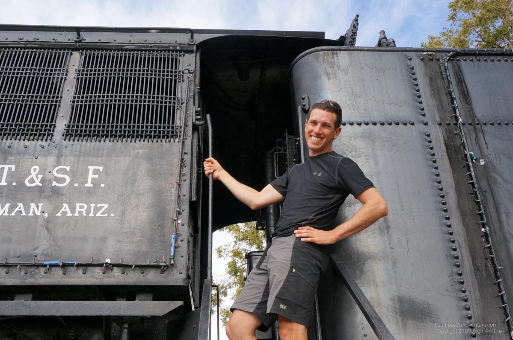
We found space in the national park campground and we would see the canyon tomorrow. Annette made plans to hike down into the canyon and I decided to take the day to try and get some work in. The work side of things turned out to be a mistake. My first attempt at WiFi in McDonalds was terrible and eventually I gave up after being forced out of my seat by chinese tourists bringing their own noodle lunches into McDonald’s to eat. A second coffee shop was only marginally better. Later in the day I visited the rim of the canyon myself, it was a very nice sight, bigger than I expected but I didn’t linger too long, I’ll save the exploration for a paddle :)
Annette successfully completed her hike was was disappointed that she heeded all the warning signs too much and limited her distance. The warnings are very pessimistic but they are dealing with huge crowds of people who have potentially never left a city before.
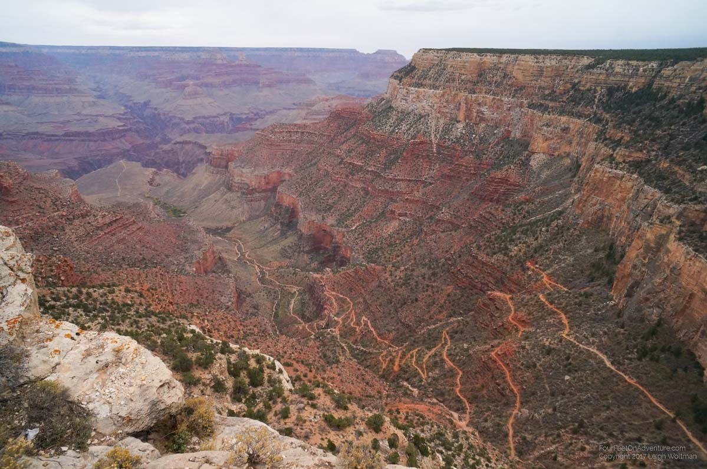
We got back to Las Vegas in rental car just in time after a quick Hoover Dam visit and some efficient grocery shopping. We aimed to hit a AirBnb we booked but after reassembling the bike and finally mailing a box back toward Canada, it was getting dark.
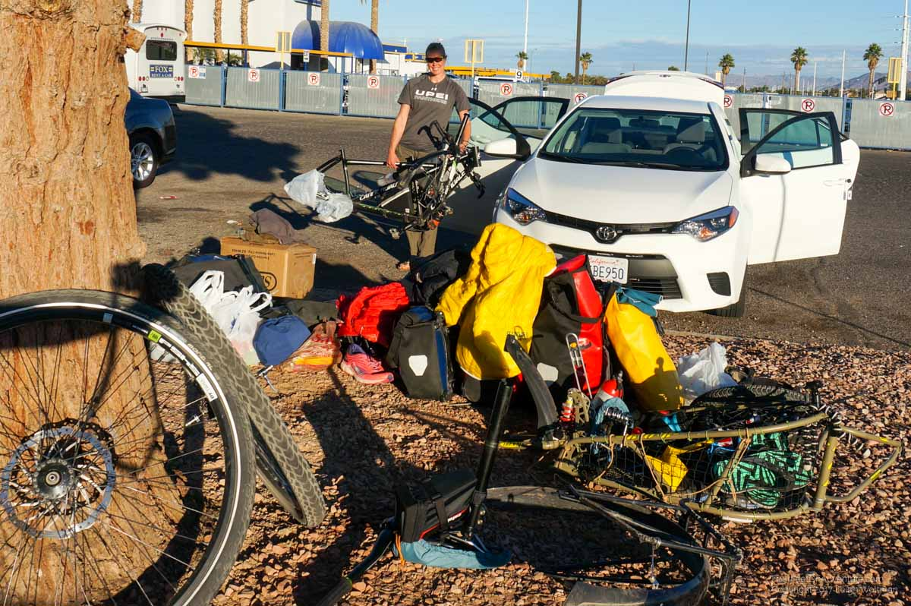
We successfully compiled 16 pounds of gear that we no longer needed and paid a handsome sum of money to jettison this box towards the Canadian border where we hope to convince someone to pick it up! But darkness had firmly taken hold and we needed to now bike down an 8 lane road. We lit all our lights and used a bike path lane and the sidewalk to sneak towards the edge of Las Vegas. We had a good stay in a gated community by a woman who was originally German, or at least that’s what it sounded like, she talked a lot but it was hard to get firm details. The next morning, after a quick dip in the jacuzzi, we started to ride the highway towards Pahrump and our awaiting sun hats but first we had to get through the mountains which form Red Rock Canyon National Conservation area. It was a bad day all around.
We hit construction which said for the next 6 miles bicycles were prohibited. A detour to another highway would add at least 80 kilometers to our route. They were paving the highway and had closed it down to two constricted lanes with no shoulders for us. We tried pushing through the gravel ditch and after a mile decided to lever our gear over the wire fence and try the conservation area itself. We had seen a mountain biker pass so there was some hope of bike trails. We did find one and followed it for a little until nightfall where we camped. This had been a rough day as I mentioned, we both cried at some point, me because of my ailing knee and Annette after pushing the bike through a sandy construction site had led to exhaustion. The next morning we continued riding desert single track with our heavily loaded bike.
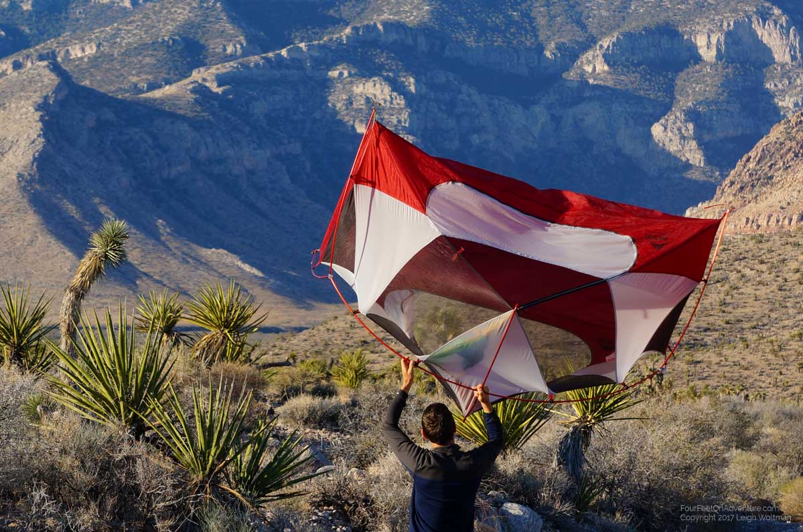
We ended up doing quite well and rode several kilometers of this before getting back to the highway.
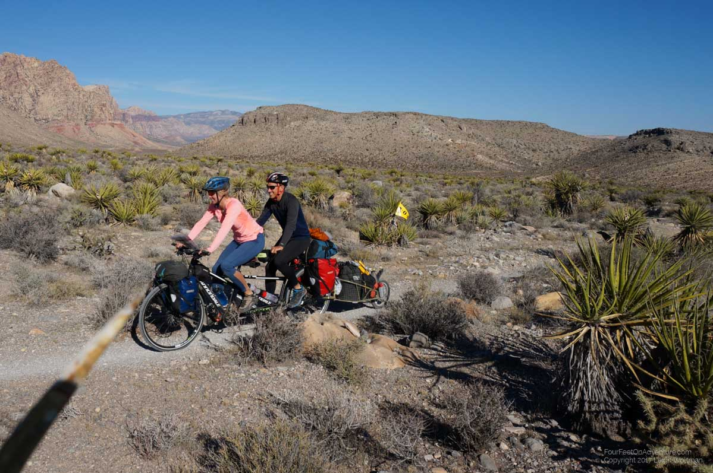
It was still quite a climb but we summited and then actually had a mainly downhill run towards Pahrump where we believed we could stay with a WarmShowers host. We tried taping my knee and it seemed to help. We pushed hard to get to the town and when we got there we had a little trouble connecting with the fellow but eventually got setup on his living room floor for two nights which is where we find ourselves today. It is American Thanksgiving so we had some pumpkin pie for dessert tonight.
Please send us an email, we would love to hear from you!